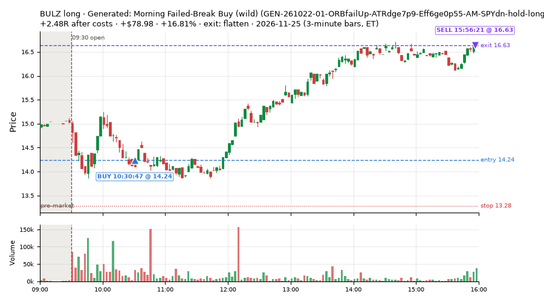
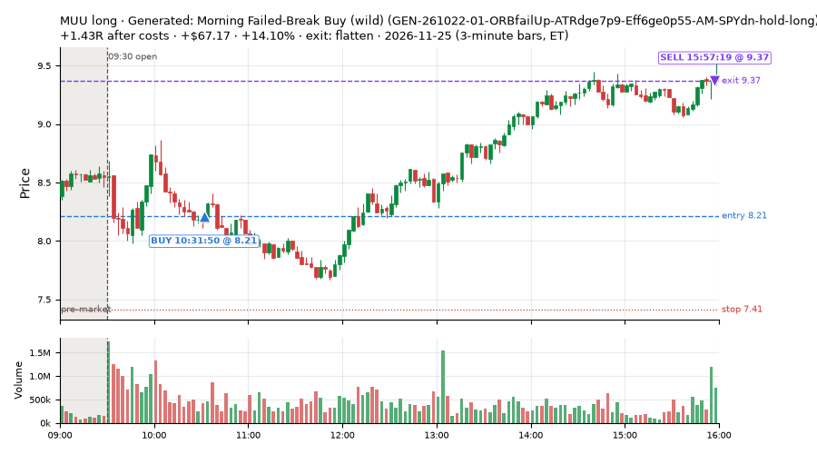
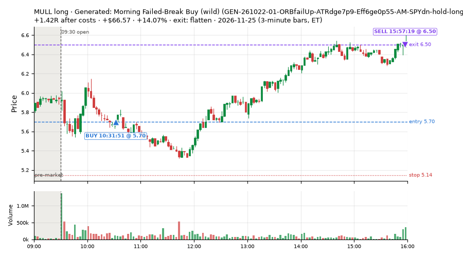
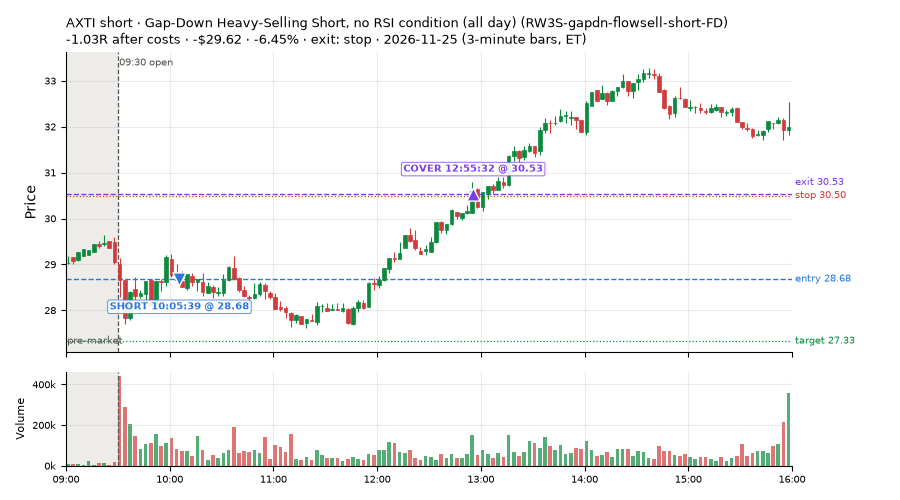
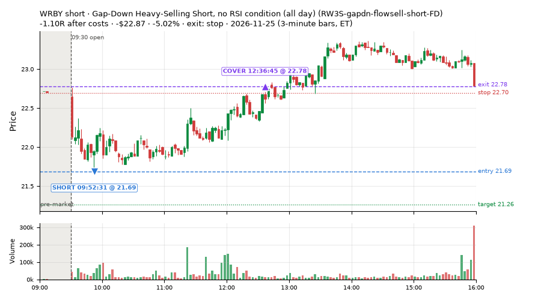
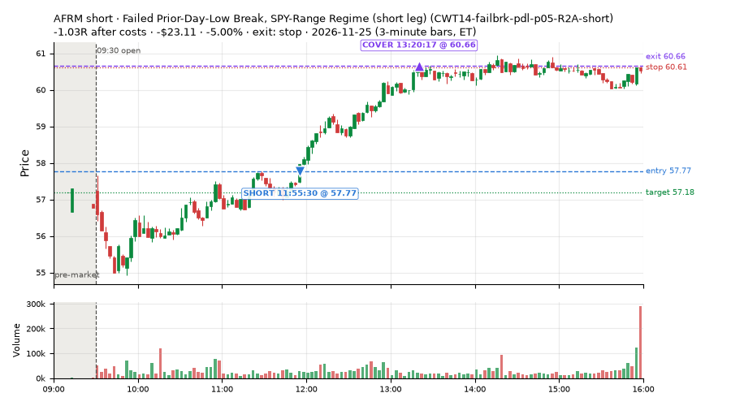
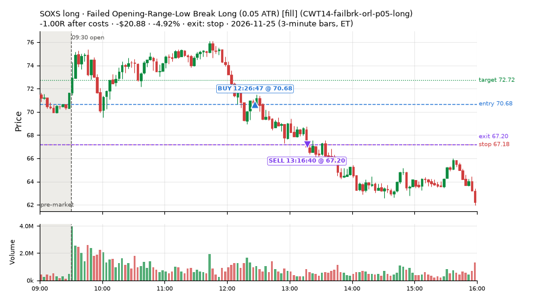
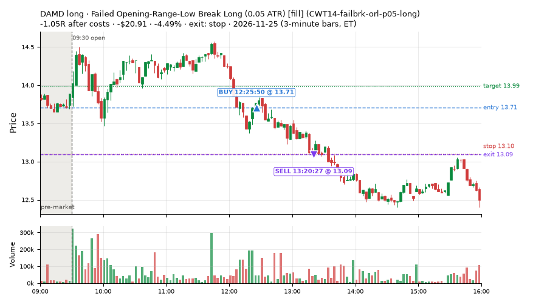

500 trades · win rate 54% · P/L $514.29
PROBATION: no live setup has passed both locked test periods. 10 owner-directed setups added 2026-10-08 (MarcoFlow top 5 + 5 new), untested live. RW6G1 (RW6 + VWAP band guard) added 2026-10-09, probation.

| Symbol | Setup | Side | In | Out | Entry | Exit | Exit reason | % gained | P/L |
|---|---|---|---|---|---|---|---|---|---|
| BULZ | Generated: Morning Failed-Break Buy (wild) (GEN-261022-01-ORBfailUp-ATRdge7p9-Eff6ge0p55-AM-SPYdn-hold-long) | long | 10:30 | 15:56 | 14.24 | 16.63 | flatten | +16.81% | $78.98 |
| MUU | Generated: Morning Failed-Break Buy (wild) (GEN-261022-01-ORBfailUp-ATRdge7p9-Eff6ge0p55-AM-SPYdn-hold-long) | long | 10:31 | 15:57 | 8.21 | 9.37 | flatten | +14.10% | $67.17 |
| MULL | Generated: Morning Failed-Break Buy (wild) (GEN-261022-01-ORBfailUp-ATRdge7p9-Eff6ge0p55-AM-SPYdn-hold-long) | long | 10:31 | 15:57 | 5.70 | 6.50 | flatten | +14.07% | $66.57 |
| Symbol | Setup | Side | In | Out | Entry | Exit | Exit reason | % lost | P/L |
|---|---|---|---|---|---|---|---|---|---|
| AXTI | RW3S-gapdn-flowsell-short-FD | short | 10:05 | 12:55 | 28.68 | 30.53 | stop | -6.45% | $-29.62 |
| WRBY | RW3S-gapdn-flowsell-short-FD | short | 09:52 | 12:36 | 21.69 | 22.78 | stop | -5.02% | $-22.87 |
| AFRM | CWT14-failbrk-pdl-p05-R2A-short | short | 11:55 | 13:20 | 57.77 | 60.66 | stop | -5.00% | $-23.11 |
| SOXS | CWT14-failbrk-orl-p05-long | long | 12:26 | 13:16 | 70.68 | 67.20 | stop | -4.92% | $-20.88 |
| DAMD | CWT14-failbrk-orl-p05-long | long | 12:25 | 13:20 | 13.71 | 13.09 | stop | -4.49% | $-20.91 |








Signal to fill: median 2s, 90th percentile 3s (500 trades). Bars close each minute; the order follows the bar close.
Best excursion (MFE): median 0.41R; worst (MAE) median 0.61R. 35% of trades never got +0.25R in our favour; 3 reached +1R and still closed at or below 0.
| Symbol | Setup | Best R | Worst R | Closed R |
|---|---|---|---|---|
| SNOW | MF5-flowsell-vwapup-rsi5hi | +1.33 | -1.13 | -1.12 |
| Z | CWT13-vwapstretch-z075-short | +1.30 | -1.06 | -1.11 |
| FOXA | RW3S-gapdn-flowsell-short-FD | +1.07 | -1.08 | -1.13 |
| CHWY | CWT13-vwapstretch-z075-short | +0.95 | -1.11 | -1.19 |
| MOS | NS2-sma50break-overbought-short | +0.96 | -1.04 | -1.15 |
| Entry time | Trades | Win | Avg R | P/L |
|---|---|---|---|---|
| 09:50-10:30 | 63 | 46% | -0.07 | $-88.50 |
| 10:30-11:30 | 147 | 69% | +0.36 | $1,076.22 |
| 11:30-13:00 | 175 | 44% | -0.44 | $-538.87 |
| 13:00-14:00 | 91 | 60% | +0.09 | $99.41 |
| 14:00-16:00 | 24 | 42% | -0.12 | $-33.97 |
| Setup | Trades | Win | Avg R after costs | Adj R (net of SPY) | Avg R ex-market (all sessions) | P/L |
|---|---|---|---|---|---|---|
| Panic Flush Reversal (3x volume) (CWT05-flush-m05-v3-long) | 3.0 | 0% | -1.13 | -1.89 | – | $-27.49 |
| Stretched Above VWAP Fade (far) (CWT13-vwapstretch-z075-short) | 5.0 | 20% | -0.92 | -0.09 | -0.04 (beta -0.97, n 7) | $-14.63 |
| Failed Opening-Range-Low Break Long (0.05 ATR) [fill] (CWT14-failbrk-orl-p05-long) | 98.0 | 83% | +0.10 | -0.12 | -0.11 (beta +0.65, n 1125) | $52.77 |
| Failed Prior-Day-Low Break, SPY-Range Regime (short leg) (CWT14-failbrk-pdl-p05-R2A-short) | 29.0 | 38% | -0.48 | -0.15 | -0.04 (beta -0.36, n 72) | $-182.98 |
| Generated: Lunch Failed Breakdown Buy (GEN-261020-05-ORBfailDn-VWAPcrossesge4-SMA20dlem0p31-LUNCH-SPYgt0p25-holdtr-long) | 2.0 | 0% | -0.71 | -1.93 | -0.28 (beta -0.58, n 10) | $-5.03 |
| Generated: Morning RSI Surge Buy (GEN-261020-07-RSIslopege19-LowWickge0p33-ATRdge4p4-AM-BRvwgt0p7-hold-long) | 21.0 | 48% | +0.46 | -0.16 | -0.08 (beta +0.86, n 30) | $45.64 |
| Generated: Morning Failed-Break Buy (wild) (GEN-261022-01-ORBfailUp-ATRdge7p9-Eff6ge0p55-AM-SPYdn-hold-long) | 35.0 | 100% | +2.31 | +1.50 | +0.05 (beta +0.68, n 142) | $1,315.60 |
| Generated: PM Failed-Breakdown Buy (GEN-261026-10-ORBfailDn-EMAdChglem0p051-PM-BRopgt0p65-t1s1-long) | 106.0 | 56% | +0.05 | -0.40 | -0.22 (beta +0.45, n 185) | $64.21 |
| Generated: Midday Volume Buy (volatile) (GEN-261027-05-VolRatioge1p5-ORLdistge0p41-ATRdge6-MID-BRvwgt0p7-t05s1-long) | 62.0 | 98% | +0.38 | +0.14 | -0.10 (beta +0.85, n 88) | $239.46 |
| Generated: Late-AM Gap-Up Failed-Break Short (GEN-261027-09-ORBfailDn-Gapge2-Slope6ge0p03-LAM-BRvwlt0p5-t05s05-short) | 1.0 | 100% | +0.30 | +0.68 | – | $0.90 |
| Sellers into Strength (all day) (MF5-flowsell-vwapup-rsi5hi) owner-directed; holdouts once: Sep-Oct -0.001R n264, Apr-Jun -0.010R n1199 | 5.0 | 20% | -0.75 | +0.59 | -0.03 (beta -0.40, n 46) | $-8.26 |
| Big Gainer Average Reclaim Fade (NS2-sma50break-overbought-short) owner-directed; holdouts once: Sep-Oct -0.115R n76, Apr-Jun +0.021R n587 | 11.0 | 18% | -0.74 | -0.42 | +0.01 (beta -0.80, n 41) | $-79.79 |
| Big Gainer Average Reclaim Fade (all day) (NS2-sma50break-overbought-short-FD) | 29.0 | 0% | -1.12 | -0.62 | -0.08 (beta -1.08, n 245) | $-259.38 |
| Gap-Down Heavy-Selling Short, no RSI condition (all day) (RW3S-gapdn-flowsell-short-FD) | 8.0 | 12% | -0.93 | -0.86 | -0.23 (beta -0.69, n 316) | $-89.28 |
| Big Gainer Fade, VWAP Band Guard (all day) (RW6G1-ns2-up3-vwap2sd-short-FD) | 9.0 | 11% | -0.89 | -0.52 | +0.04 (beta -0.80, n 50) | $-96.94 |
| Afternoon Blow-off Short (all day) (exhaustion_short-FD) | 41.0 | 10% | -0.95 | -0.13 | -0.09 (beta -0.55, n 93) | $-217.99 |
| Morning Bounce Fade (all day) (heat_fade_short-FD) | 34.0 | 12% | -0.92 | -0.21 | -0.20 (beta -0.88, n 530) | $-221.63 |
| Index Last-Half-Hour Momentum (intraday_momentum) failed Apr-Jun holdout: -0.091R/trade over 147 trades | 1.0 | 0% | -0.53 | +0.30 | – | $-0.89 |
Market direction (SPY, beta 1) accounted for $276.07 of today's $514.29; the rest ($238.22) came from the setups themselves. Avg R net of SPY: -0.11 (incl. a hedge leg's cost; report only).
32 setups live today. Today: 1896 signals, 500 taken, 51 lost because another setup held the symbol (3%). Since 2026-10-21 (26 sessions): 35849 signals, 11238 taken, 1451 lost to other setups (4%). Peak open positions today 180 of 300 slots. Earnings blackout removed 118 symbols before scanning.
Simulated playing time (not live): 24553 what-if trades of signals not taken, avg -0.05R, 54% winners; of them 1450 lost to another setup (avg -0.03R).
Silent: GEN-261028-02-VWAPxDn-NewLOD-AM-QQQgt0p6-t1s1-long, GEN-261029-08-Ret15mlem0p36-Flow3lem0p54-RSI14ge65-AM-SPYgt0p5-hold-short, GEN-261020-03-MACDhge0p079-BarsSinceLODle5-MID-BRvwlt0p3-t05s05-long, GEN-261022-06-NewLOD-ORBfailUp-BuyPresslem0p49-PM-SPYltm0p5-t1s1-long, GEN-261020-02-RSIslopelem19-BarRngATRge0p14-BuyPressge0p17-LATE-BRvwgt0p7-t05s1-short, GEN-261021-08-RSI2le0-Ret15mATRge0p16-ATRdge3p6-LUNCH-QQQgt0p6-holdtr-long, GEN-POD1022-01-thrasher-breadth-thrust-stocks-holdtr-long, GEN-261023-01-VWAPxUp-VWAPatrge0p33-LAM-SPYgt0p5-t05s05-short, GEN-261029-10-RSIslopege19-Ret5mlem0p21-EMAdiffge0p29-OPEN-BRvwgt0p5-t1s1-short, GEN-261029-05-BearDiv-RSI14ge78-Compress6le0p091-AM-BRopgt0p5-t05s05-long · Crowded out: NS2-sma50break-overbought-short, NM-RWR1-exh150-gapdn-spyup-pm-short · Starved: heat_fade_short-FD, heat_fade_long-FD, MF1-945-flowsell-vwapup-FD, heat_fade_long
| Prio | Setup | Today sig / taken | Sessions | Signals / taken / trades | Taken/day | Expected/day | Lost to other setups | Lost to (setup n) | Top skip reasons | SIMULATED: not-taken n / avg R / win | Verdict |
|---|---|---|---|---|---|---|---|---|---|---|---|
| 1 | Opening-Range Breakdown Buy (all day) ST1-ordn-long-pm-t05s1-FD | 1 / 0 | 26 | 101 / 59 / 59 | 2.27 | 3.49 | 2 | heat_fade_short-FD 1, NS3-failed-vwap-reclaim-short-FD 1 | spread / quote / size 27, daily loss cap 7, slots full 3 | 42 / -0.03R / 55% | slow 11.3 entries/week; ~5 weeks to 60 trades |
| 2 | Big Gainer Average Reclaim Fade NS2-sma50break-overbought-short | 21 / 11 | 26 | 304 / 41 / 41 | 1.58 | 5.74 | 129 | NS2-sma50break-overbought-short-FD 115, RW6-ns2-up3-short-FD 56, CWT12-coil-k4-long 10 | symbol held by another setup 129, spread / quote / size 76, not shortable / shorts off 36 | 263 / +0.36R / 73% | crowded-out 129 of 304 signals (42%) lost to setups already holding the symbol |
| 3 | Big Gainer Fade, VWAP Band Guard (all day) RW6G1-ns2-up3-vwap2sd-short-FD | 10 / 9 | 16 | 108 / 50 / 50 | 3.12 | 3.73 | 4 | RW6-ns2-up3-short-FD 3, NS2-sma50break-overbought-short-FD 2, RW6G1-ns2-up3-vwap2sd-short-FD 2 | not shortable / shorts off 42, symbol held by another setup 4, spread / quote / size 4 | 58 / +0.14R / 60% | ok 15.6 entries/week |
| 4 | Generated: Lunch Failed Breakdown Buy GEN-261020-05-ORBfailDn-VWAPcrossesge4-SMA20dlem0p31-LUNCH-SPYgt0p25-holdtr-long | 4 / 2 | 5 | 33 / 10 / 10 | 2.00 | – | 1 | heat_fade_short-FD 1 | daily loss cap 20, spread / quote / size 2, symbol held by another setup 1 | 23 / +0.07R / 61% | slow 10.0 entries/week; ~6 weeks to 60 trades |
| 5 | Big Gainer Dip-and-Pop (all day) NS1-rsidip-rsi5pop-long-FD | 0 / 0 | 5 | 26 / 8 / 8 | 1.60 | 5.39 | 1 | CWT14-failbrk-pdl-p05-R2A-short 1 | daily loss cap 15, symbol held by another setup 1, spread / quote / size 1 | 18 / -0.19R / 56% | slow 8.0 entries/week; ~8 weeks to 60 trades |
| 6 | Afternoon Blow-off Short (all day) exhaustion_short-FD | 354 / 41 | 5 | 466 / 93 / 93 | 18.60 | 64.64 | 6 | GEN-261027-05-VolRatioge1p5-ORLdistge0p41-ATRdge6-MID-BRvwgt0p7-t05s1-long 3, GEN-261022-01-ORBfailUp-ATRdge7p9-Eff6ge0p55-AM-SPYdn-hold-long 3 | daily loss cap 262, other 47, not shortable / shorts off 37 | 373 / -0.52R / 20% | ok 93.0 entries/week |
| 7 | Sellers into Strength (all day) MF5-flowsell-vwapup-rsi5hi | 11 / 5 | 5 | 91 / 46 / 46 | 9.20 | 15.47 | 11 | MF5-flowsell-vwapup-rsi5hi-FD 10, MF3-open-flowsell-rsi5hi-FD 5, MF1-945-flowsell-vwapup-FD 2 | spread / quote / size 23, symbol held by another setup 11, daily loss cap 7 | 45 / +0.23R / 64% | ok 46.0 entries/week |
| 8 | Generated: Morning VWAP-Loss Low Buy (QQQ up) GEN-261028-02-VWAPxDn-NewLOD-AM-QQQgt0p6-t1s1-long | 0 / 0 | 5 | 0 / 0 / 0 | 0.00 | – | 0 | – | – | 0 / – | silent no signals in 5 session(s); no expected rate on file |
| 9 | Failed Prior-Day-Low Break, SPY-Range Regime (long leg) CWT14-failbrk-pdl-p05-R2A-long | 0 / 0 | 3 | 33 / 16 / 16 | 5.33 | – | 0 | – | spread / quote / size 17 | 17 / +0.03R / 71% | ok 26.7 entries/week |
| 10 | Generated: PM Oversold Turn Buy (MACD rising) GEN-261020-01-MACDhge0p12-RSI5le25-PM-BRvwgt0p6-t1s05-long | 0 / 0 | 3 | 57 / 47 / 47 | 15.67 | – | 3 | RW3S-gapdn-flowsell-short-FD 2, MF5-flowsell-vwapup-rsi5hi 1 | spread / quote / size 5, symbol held by another setup 3, price through stop/target 2 | 10 / -0.34R / 40% | ok 78.3 entries/week |
| 11 | Stretched Above VWAP Fade (far) CWT13-vwapstretch-z075-short | 164 / 5 | 3 | 170 / 7 / 7 | 2.33 | – | 0 | – | daily loss cap 151, spread / quote / size 7, not shortable / shorts off 5 | 163 / -0.32R / 26% | slow 11.7 entries/week; ~5 weeks to 60 trades |
| 12 | Failed Prior-Day-Low Break, SPY-Range Regime (short leg) CWT14-failbrk-pdl-p05-R2A-short | 124 / 29 | 3 | 206 / 72 / 72 | 24.00 | – | 1 | GEN-261026-10-ORBfailDn-EMAdChglem0p051-PM-BRopgt0p65-t1s1-long 1 | spread / quote / size 77, daily loss cap 53, not shortable / shorts off 2 | 134 / -0.14R / 57% | ok 120.0 entries/week |
| 13 | Generated: PM Sharp-Drop Buy (in uptrend) GEN-261019-03-Ret15mATRlem0p12-FromOpenATRlem0p34-SMA20slopege0p29-PM-BRoplt0p5-t05s1-long | 0 / 0 | 3 | 3 / 3 / 3 | 1.00 | – | 0 | – | – | 0 / – | slow 5.0 entries/week; ~12 weeks to 60 trades |
| 14 | Generated: Morning Weak-Bounce Short (quiet) GEN-261022-08-EMAdChglem0p094-Flow3ge1-RVolDayle0p59-AM-SPYgt0p25-holdtr-short | 0 / 0 | 3 | 36 / 24 / 24 | 8.00 | – | 0 | – | spread / quote / size 10, not shortable / shorts off 2 | 12 / +0.62R / 92% | ok 40.0 entries/week |
| 15 | Panic Flush Reversal (3x volume) CWT05-flush-m05-v3-long | 3 / 3 | 3 | 7 / 4 / 4 | 1.33 | – | 0 | – | spread / quote / size 3 | 3 / -0.15R / 67% | slow 6.7 entries/week; ~9 weeks to 60 trades |
| 16 | Big Gainer Average Reclaim Fade (all day) NS2-sma50break-overbought-short-FD | 107 / 29 | 21 | 568 / 245 / 245 | 11.67 | 17.08 | 33 | CWT12-coil-k4-long 11, NS2-sma50break-overbought-short 11, CWT12-coil-k6-long 5 | spread / quote / size 85, not shortable / shorts off 75, daily loss cap 68 | 323 / -0.01R / 55% | ok 58.3 entries/week |
| 17 | Morning Bounce Fade (all day) heat_fade_short-FD | 180 / 34 | 21 | 1978 / 530 / 530 | 25.24 | 173.78 | 342 | heat_fade_short 254, LIQ-orl-sweep-open15-s25-long 20, CWT14-failbrk-orl-p05-long 17 | daily loss cap 563, symbol held by another setup 342, spread / quote / size 271 | 1448 / -0.11R / 45% | starved 25.24 entries/day vs ~173.78 expected |
| 18 | Failed Opening-Range-Low Break Long (0.05 ATR) [fill] CWT14-failbrk-orl-p05-long | 145 / 98 | 21 | 4096 / 1125 / 1125 | 53.57 | – | 206 | CWT14-failbrk-orl-p10-lowvol-long 165, CWT14-failbrk-orl-p10-long 164, CWT14-failbrk-orl-p05-lowvol-long 162 | daily loss cap 1691, spread / quote / size 543, per-setup cap 325 | 2965 / -0.08R / 59% | ok 267.9 entries/week |
| 19 | Gap-Down Heavy-Selling Short, no RSI condition (all day) RW3S-gapdn-flowsell-short-FD | 126 / 8 | 8 | 1317 / 316 / 316 | 39.50 | – | 14 | CWT12-coil-k4-long 3, GEN-261019-05-RSIslopelem9-PDLdistle0p14-EMAdifflem0p46-OPEN-SPYltm0p5-t1s1-long 3, CWT14-failbrk-pdl-p05-long 2 | daily loss cap 624, spread / quote / size 252, not shortable / shorts off 67 | 1001 / +0.13R / 60% | ok 197.5 entries/week |
| 20 | Generated: Morning Overbought Drop Short GEN-261029-08-Ret15mlem0p36-Flow3lem0p54-RSI14ge65-AM-SPYgt0p5-hold-short | 0 / 0 | 3 | 0 / 0 / 0 | 0.00 | – | 0 | – | – | 0 / – | silent no signals in 3 session(s); no expected rate on file |
| 21 | Generated: Morning RSI Surge Buy GEN-261020-07-RSIslopege19-LowWickge0p33-ATRdge4p4-AM-BRvwgt0p7-hold-long | 47 / 21 | 4 | 62 / 30 / 30 | 7.50 | – | 2 | NS2-sma50break-overbought-short 1, CWT14-failbrk-pdl-p05-R2A-short 1 | spread / quote / size 30, symbol held by another setup 2 | 32 / +0.68R / 44% | ok 37.5 entries/week |
| 22 | Generated: Morning Selling-Burst Buy GEN-261028-09-FlowShiftlem0p65-ADX7le23-AM-BRoplt0p35-t05s1-long | 0 / 0 | 5 | 31 / 20 / 20 | 4.00 | – | 1 | RW3S-gapdn-flowsell-short-FD 1 | spread / quote / size 10, symbol held by another setup 1 | 11 / -0.01R / 73% | ok 20.0 entries/week |
| 23 | Generated: Morning VWAP Reclaim Buy (SPY up) GEN-261021-07-VWAPxUp-ORBfailUp-AM-SPYgt0p5-hold-long | 0 / 0 | 5 | 7 / 5 / 5 | 1.00 | – | 0 | – | spread / quote / size 2 | 2 / +0.11R / 50% | slow 5.0 entries/week; ~12 weeks to 60 trades |
| 24 | Generated: Midday Volume Buy (volatile) GEN-261027-05-VolRatioge1p5-ORLdistge0p41-ATRdge6-MID-BRvwgt0p7-t05s1-long | 106 / 62 | 5 | 135 / 88 / 88 | 17.60 | – | 17 | NS2-sma50break-overbought-short-FD 7, heat_fade_short-FD 4, exhaustion_short-FD 4 | spread / quote / size 25, symbol held by another setup 17, other 5 | 47 / +0.40R / 94% | ok 88.0 entries/week |
| 25 | Generated: Morning Failed-Break Buy (wild) GEN-261022-01-ORBfailUp-ATRdge7p9-Eff6ge0p55-AM-SPYdn-hold-long | 125 / 35 | 4 | 347 / 142 / 142 | 35.50 | – | 2 | MF4-h40-open-flowsell-FD 1, RW3S-gapdn-flowsell-short-FD 1 | spread / quote / size 138, other 53, daily loss cap 10 | 205 / +0.62R / 49% | ok 177.5 entries/week |
| 26 | Generated: Midday Low Bounce Buy (MACD up) GEN-261020-03-MACDhge0p079-BarsSinceLODle5-MID-BRvwlt0p3-t05s05-long | 0 / 0 | 3 | 0 / 0 / 0 | 0.00 | – | 0 | – | – | 0 / – | silent no signals in 3 session(s); no expected rate on file |
| 27 | Generated: Midday Choppy Oversold Buy GEN-261029-02-RSI2le0-VWAPcrossesge9-DayRngVsPrevle0p52-MID-BRvwlt0p4-hold-long | 0 / 0 | 3 | 53 / 35 / 35 | 11.67 | – | 0 | – | other 13, spread / quote / size 5 | 18 / +0.49R / 72% | ok 58.3 entries/week |
| 28 | Generated: PM New-Low Buy (failed breakout) GEN-261022-06-NewLOD-ORBfailUp-BuyPresslem0p49-PM-SPYltm0p5-t1s1-long | 0 / 0 | 3 | 0 / 0 / 0 | 0.00 | – | 0 | – | – | 0 / – | silent no signals in 3 session(s); no expected rate on file |
| 29 | Index Last-Half-Hour Momentum intraday_momentum | 4 / 1 | 3 | 12 / 2 / 2 | 0.67 | 2.37 | 1 | MF5-flowsell-vwapup-rsi5hi 1 | spread / quote / size 9, symbol held by another setup 1 | 10 / -0.39R / 10% | slow 3.3 entries/week; ~18 weeks to 60 trades |
| 30 | Generated: Late-AM Gap-Up Failed-Break Short GEN-261027-09-ORBfailDn-Gapge2-Slope6ge0p03-LAM-BRvwlt0p5-t05s05-short | 14 / 1 | 3 | 22 / 1 / 1 | 0.33 | – | 0 | – | not shortable / shorts off 21 | 21 / +0.90R / 95% | slow 1.7 entries/week; ~36 weeks to 60 trades |
| 31 | Generated: PM Failed-Breakdown Buy GEN-261026-10-ORBfailDn-EMAdChglem0p051-PM-BRopgt0p65-t1s1-long | 350 / 106 | 3 | 673 / 185 / 185 | 61.67 | – | 6 | RW3S-gapdn-flowsell-short-FD 2, CWT14-failbrk-pdl-p05-R2A-short 2, exhaustion_short-FD 1 | per-setup cap 305, other 64, daily loss cap 58 | 488 / +0.09R / 57% | ok 308.3 entries/week |
| 32 | Generated: Midday Failed-Breakout Low Buy GEN-261027-06-ORBfailUp-BarsSinceLODle5-MID-BRoplt0p35-holdtr-long | 0 / 0 | 2 | 0 / 0 / 0 | 0.00 | – | 0 | – | – | 0 / – | quiet - wait no signals in 2 session(s); too early to tell |
Every trade is attached as a CSV you can open and edit in Excel or Google Sheets. Live page: https://misiti15.github.io/MCF/live/